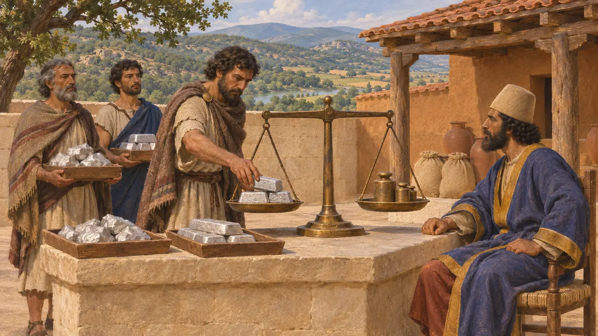
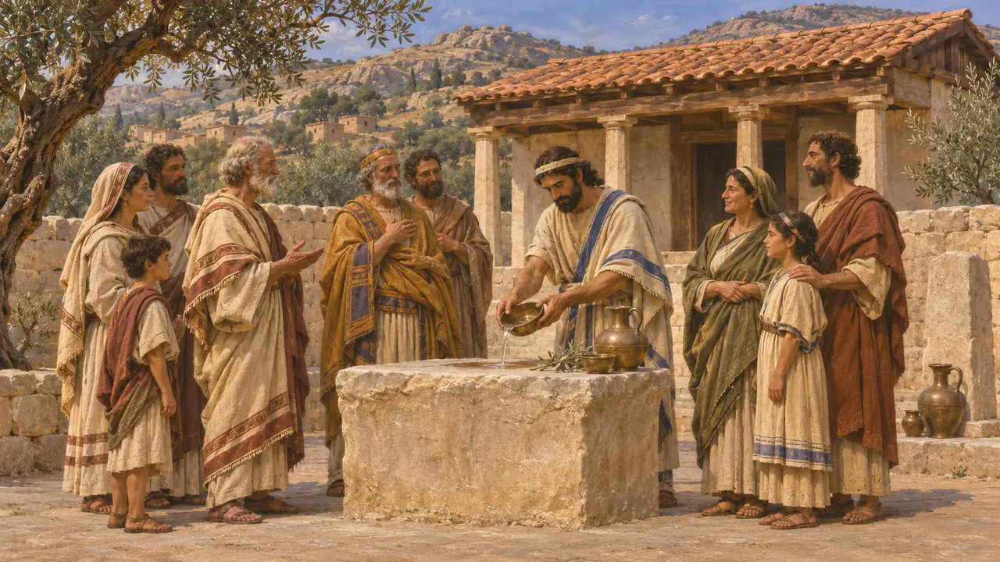
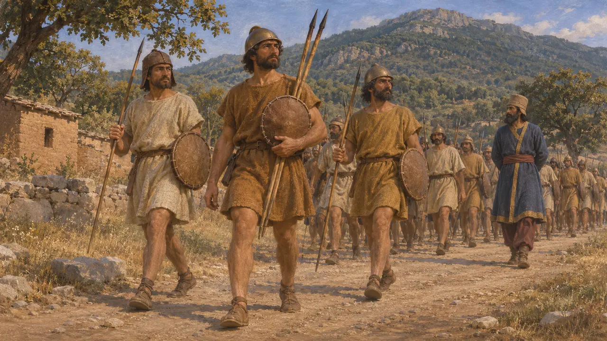
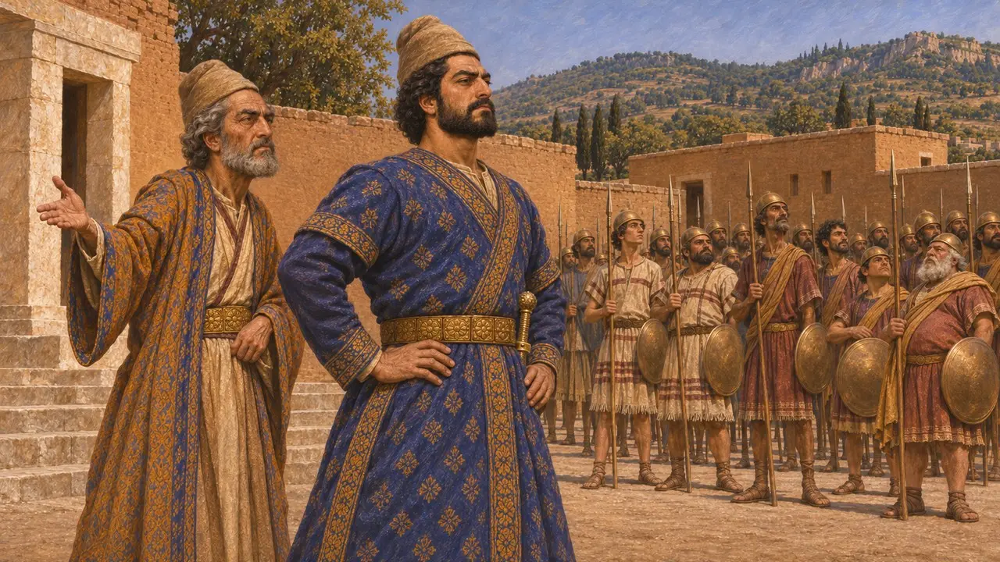
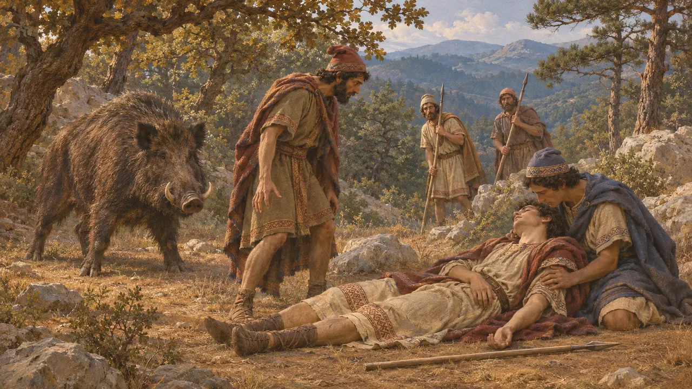

Los misios
Pueblo del noroeste de Anatolia bajo dominio persa, siglos VI-V a. C.
En el juego: Nivel 7: Sardes arde
Los misios vivían en el noroeste de Anatolia, en torno al Olimpo de Misia, y pasaron a ser súbditos del rey persa tras la conquista de Lidia. Heródoto los nombra en el ejército de Jerjes en 480 a. e. c., sirviendo junto a los lidios bajo un mismo jefe. Casi todo lo que se sabe de ellos procede de autores griegos.
En el juego: El juego nombra a los misios solo en la Crónica, los decretos y las notas de campaña. No tienen una mecánica propia más allá de lo que muestran esos textos.

Tierra y tributo
Relato antiguoHeródoto sitúa a los misios en el segundo distrito tributario del imperio de Darío, junto con los lidios y algunos pueblos anatolios menores. Da como pago anual del distrito 500 talentos de plata. La lista es la propia exposición de Heródoto sobre el sistema de tributos.
Herodotus 3.90

Parientes de lidios y carios
Relato antiguoHeródoto dice que misios y lidios tenían parte en el santuario de Zeus Cario en Milasa, porque se los consideraba parientes de los carios. La afirmación es griega y deja entrever un sentimiento común de parentesco entre los pueblos del oeste de Anatolia.
Herodotus 1.171

Armas y mando en 480 a. e. c.
Relato antiguoHeródoto describe a los misios del ejército de Jerjes con cascos del país, escudos pequeños y jabalinas endurecidas al fuego. Los llama colonos lidios, conocidos como olimpienos por la montaña. Lidios y misios marchaban a las órdenes de Artafernes, a quien Heródoto llama hijo del Artafernes que invadió en Maratón con Datis.
Herodotus 7.74

Dos hombres llamados Artafernes
Relato antiguoHeródoto nombra a Artafernes como el jefe que navegó a Maratón con Datis, y como miembro de la familia del sátrapa de Sardes. El jefe de lidios y misios en 480 a. e. c. era un hombre más joven del mismo nombre, hijo de aquel jefe de Maratón. No deben tomarse por una misma persona.
Herodotus 6.94; Herodotus 7.74

El jabalí del Olimpo de Misia
Leyenda posteriorHeródoto cuenta que un enorme jabalí asolaba el Olimpo de Misia y que Creso envió a su hijo Atis a cazarlo. Atis murió a manos del exiliado frigio Adrasto, a quien Creso había purificado y encargado de protegerlo, con lo que se cumplió un sueño. El relato es una historia moral sobre el destino y no es una prueba de la historia misia.
Herodotus 1.36-43
Fuentes
- Herodotus 7.74
- Herodotus 3.90
- Herodotus 1.171
- Herodotus 6.94
- Herodotus 1.36-43
- P. Briant, From Cyrus to Alexander, 2002